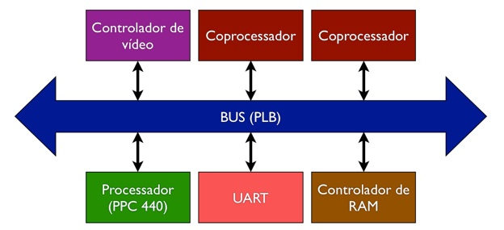

Sobre o projeto

Ray tracing é uma técnica utilizada em computação gráfica para sintetizar imagens 3-D com alto grau de realismo. O método consiste em rastrear a partir de uma cena pré-definida todos os fenômenos ópticos (reflexões e refrações) a que são submetidos os raios de luz que chegam ao observador. A página de imagens contém alguns exemplos de sínteses efetuadas por meio desa técnica.
Embora o princípio subjacente não seja sofisticado, os resultados obtidos por ray tracing são visualmente impressionantes e superiores quando comparados a imagens geradas por outros algoritmos, como a renderização por rasterização. Contudo, o ray tracing apresenta um alto custo computacional, sendo indicado para situações onde o tempo de geração das imagens não é crítico (como fotografias sintetizadas ou efeitos especiais para filmes e programas de TV).
Ray tracing
As aplicações dos sintetizadores de imagens 3D são inúmeras. Desde a indústria de jogos até a medicina, passando pela indústria cinematográfica e pela arquitetura, a demanda por imagens foto-realistas geradas em tempo real é quase onipresente. Assim, a otimização em hardware é um caminho frequentemente tomado para atender a essa necessidade por processamento gráfico, haja vista a proliferação das GPUs (Graphics Processing Units) em praticamente todos os novos computadores à venda no mercado, e mesmo em muitos dispositivos móveis, tais como smartphones e tablets. O próximo passo nessa cadeia — no qual se insere o projeto h3dge — é o desenvolvimento de dispositivos dedicados à execução de algoritmos cada vez mais complexos.
Aplicações
Este projeto buscou aplicar as modernas metodologias para o desenvolvimento de sistemas altamente integrados em um único chip, conhecidos como Systems-on-Chip (SoC). Dessa forma, a arquitetura do sistema consiste em um processador embarcado — no caso um núcleo PowerPC 440, embarcado na FPGA Virtex 5, fabricada pela Xilinx, Inc. —, que se comunica por uma via de dados com os periféricos instanciados (IPs) e com os módulos em hardware dedicados. A figura abaixo ilustra esse funcionamento:
Arquitetura
